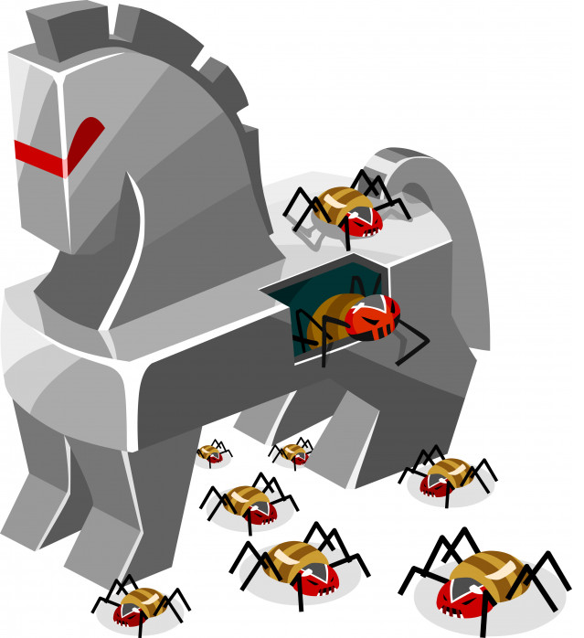

Dentro de lo que es la seguridad informática hay que considerar las diversas amenazas que pueden
afectar al funcionamiento del computador. A continuación, explicaremos algunos de los principales
tipos de ataques que se pueden presentar.
Virus Informático: Un virus informático es un programa que se copia automáticamente y que tiene por
objeto alterar el normal funcionamiento de la computadora, sin el permiso o el conocimiento del
usuario. Los virus son programas que se replican y ejecutan por sí mismos. Los virus, habitualmente,
reemplazan archivos ejecutables por otros infectados con el código de este. Los virus pueden
destruir, de manera intencionada, los datos almacenados en un ordenador, aunque también existen
otros más “benignos”, que solo se caracterizan por ser molestos.
Gusanos (Worms): Un gusano es un virus informático que tiene la propiedad de duplicarse a sí mismo.
Los gusanos utilizan las partes automáticas de un sistema operativo que generalmente son invisibles
al usuario.
A diferencia de un virus, un gusano no precisa alterar los archivos de programas, sino que reside en
la memoria y se duplica a sí mismo. Los gusanos siempre dañan la red (aunque sea simplemente
consumiendo ancho de banda), mientras que los virus siempre infectan o corrompen los archivos de la
computadora que atacan.
Spywares (Programas espías): Los programas espías o spywares son aplicaciones que recopilan
información sobre una persona u organización sin su conocimiento. La función más común que tienen
estos programas es la de recopilar información sobre el usuario y distribuirlo a empresas
publicitarias u otras organizaciones interesadas, pero también se han empleado en círculos legales
para recopilar información contra sospechosos de delitos, como en el caso de la piratería de
software.
Caballos de Troya (Troyanos): Se denomina troyano a un programa malicioso capaz de alojarse en
computadoras y permitir el acceso a usuarios externos, a través de una red local o de Internet, con
el fin de recabar información o controlar remotamente a la máquina anfitriona.
Un troyano no es en sí un virus, aun cuando teóricamente pueda ser distribuido y funcionar como tal.
La diferencia fundamental entre un troyano y un virus consiste en su finalidad. Para que un programa
sea un “troyano” solo tiene que acceder y controlar la máquina anfitriona sin ser advertido,
normalmente bajo una apariencia inocua. Al contrario que un virus, que es un huésped destructivo, el
troyano no necesariamente provoca daños porque no es su objetivo.
EFECTOS
VIRUS: Dado que una característica de los virus es el consumo de recursos, los virus ocasionan
problemas tales como: pérdida de productividad, cortes en los sistemas de información o daños a
nivel de datos.
Otra de las características es la posibilidad que tienen de ir replicándose. Las redes en la
actualidad ayudan a dicha propagación cuando éstas no tienen la seguridad adecuada.
Otros daños que los virus producen a los sistemas informáticos son la pérdida de información, horas
de parada productiva, tiempo de reinstalación, etc.
Hay que tener en cuenta que cada virus plantea una situación diferente.
GUSANOS: Generalmente los daños que causa un gusano no son tan devastadores a los de un virus o a
los de un troyano pero si son bastante molestos divido a que un gusano se duplica de una manera
indefinida (que a cierto punto puede llegar a ser incontrolable). Un gusano tiene por finalidad
consumir los recursos de un computador y si es que no se es tratado es capaz de hacer que las tareas
ordinarias, aplicaciones entre otras tareas se hagan excesivamente lentas hasta el punto de que el
consumo de recursos sea tal de que hasta las tareas más ordinarias no puedan ejecutarse.
SPYWARE: Los daños que este puede causar varían del nivel de la información que estos puedan robar
(si es que tu computador guarda información valiosa el daño puede ser colosal) o de las paginas
emergentes que estos dejan (generalmente estas páginas descargan virus y otros archivos
infecciosos). También se presenta el caso de que son molestos y de que consumen ancho de banda y lo
más molesto que hacen (que a la ves es peligroso) es apagar tu computador sin previo aviso (no todos
los Spywares hacen esto, pero cuando ocurre es terriblemente molesto y al mismo tiempo es
perjudicial si es que haces un trabajo importante).

TROYANOS: Los daños que un troyano puede causar son los más devastadores que se pueden sufrir debido
a que la función principal de un troyano (a excepción de algunos que solo roban información) es
netamente destruir. Las nefastas consecuencias que puede causar un troyano son: infectar archivos,
subir y bajar archivos infecciosos a la red, ser una puerta de enlace para la descarga de virus,
funcionar de controlador remoto (que otra persona ajena haga uso y desastres dentro de tu computador
[hackers y lamers]), alteraciones en el hardware, robar información de tu computador (al igual que
un spyware), auto ejecutar virus informáticos, reiniciar o apagar el equipo sin previo aviso, etc.
En pocas palabras, un troyano tiene las facultades de hacer una destrucción total de un computador.
VIDEOS RELACIONADOS CON LA TEMÁTICA
SEGURIDAD INFORMÁTICA
TOP 10- LOS PEORES VIRUS INFORMÁTICOS DE LA HISTORIA